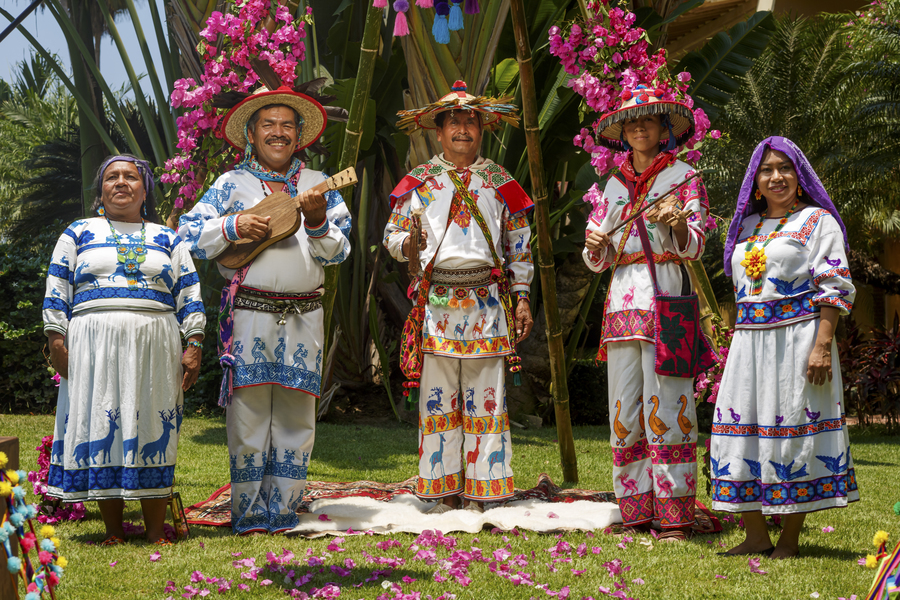

Los pueblos indígenas de México representan la herencia viva de las antiguas civilizaciones que habitaron el territorio mucho antes
de la llegada de los europeos. Culturas como la olmeca, maya, zapoteca, mixteca y mexica dejaron un legado invaluable en
conocimientos, arte, tradiciones y formas de vida que aún perduran en la actualidad.
A lo largo de la historia, los pueblos indígenas han desempeñado un papel fundamental en la identidad cultural de México,
preservando su lengua, cosmovisión y costumbres a pesar de los desafíos. Su riqueza se refleja en su arte, música, danzas,
vestimenta, medicina tradicional y festividades, muchas de las cuales se han fusionado con influencias modernas sin perder su
esencia ancestral.

Cada comunidad indígena posee una cosmovisión única que se manifiesta en su relación con la naturaleza, su forma de organización
social y sus prácticas espirituales. En la actualidad, continúan siendo guardianes de un conocimiento invaluable sobre el medio
ambiente, la biodiversidad y las tradiciones que han sido transmitidas de generación en generación.
Actualmente, existen 68 pueblos indígenas reconocidos en México, cada uno con una identidad única.
Sin embargo, enfrentan desafíos como la pérdida de territorio, la discriminación y la desaparición de sus
lenguas. Aun así, sus esfuerzos por preservar su patrimonio continúan, siendo un pilar fundamental de la
diversidad cultural mexicana.
Reconocer, respetar y valorar la historia y cultura de los pueblos indígenas no solo es un acto de justicia,
sino también una oportunidad para aprender de su sabiduría y contribuir a su preservación para las futuras generaciones.
